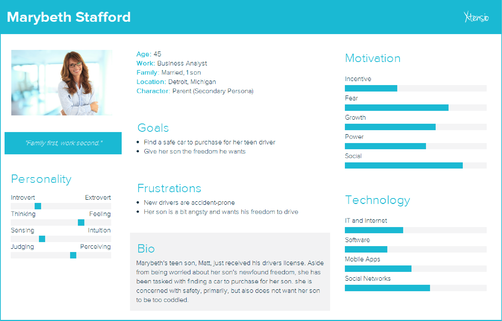
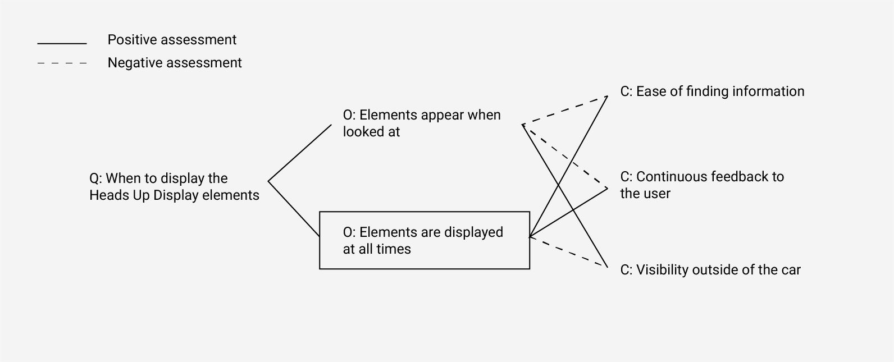
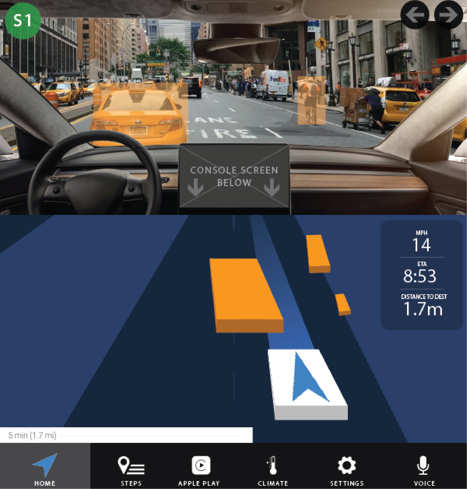
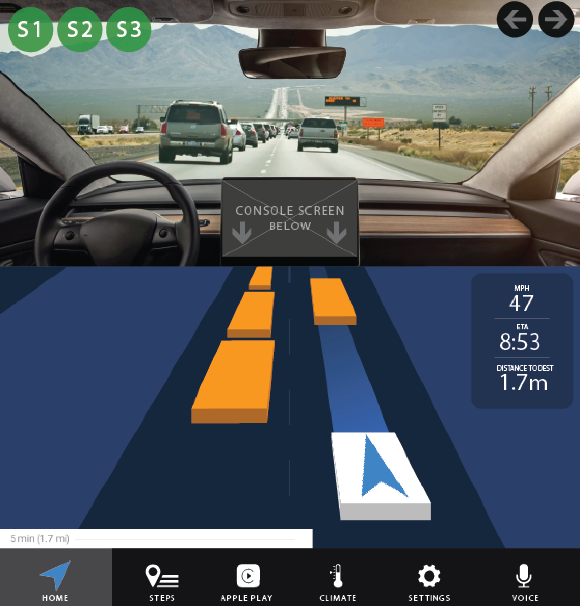
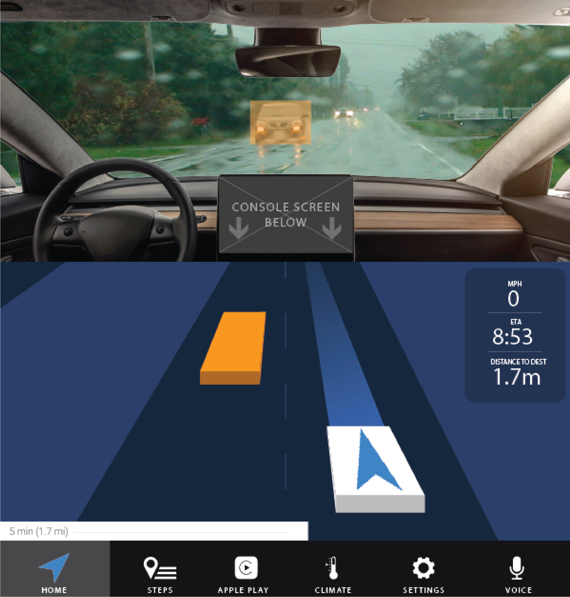
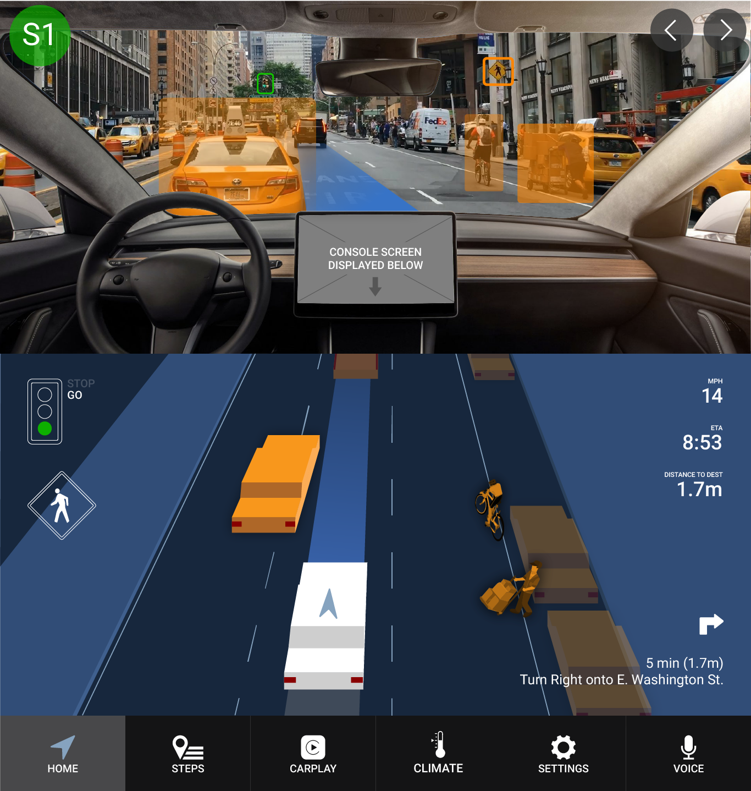
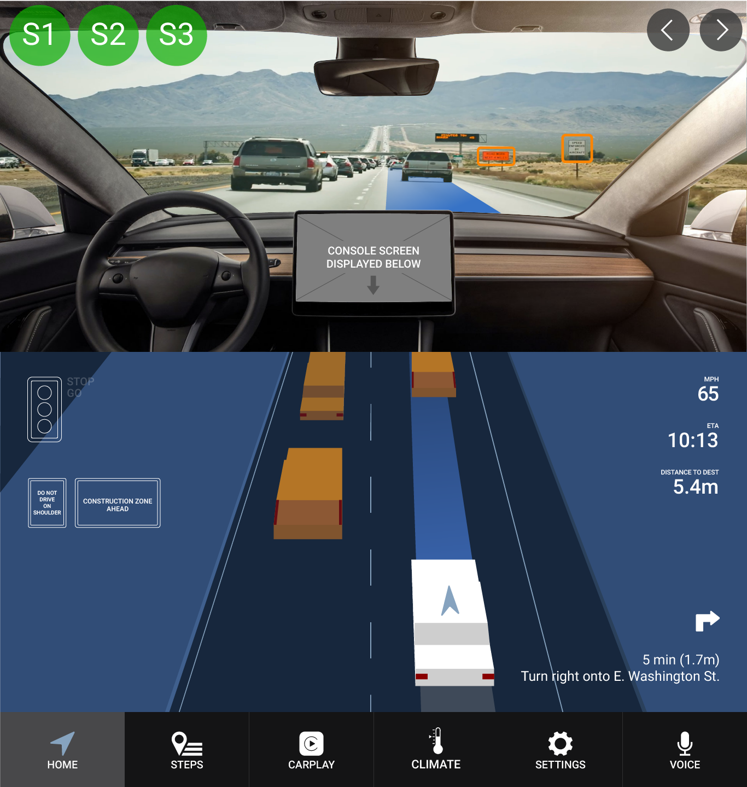
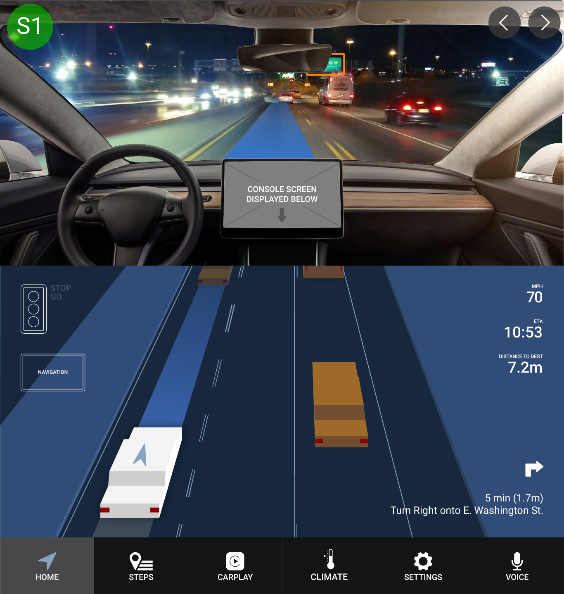
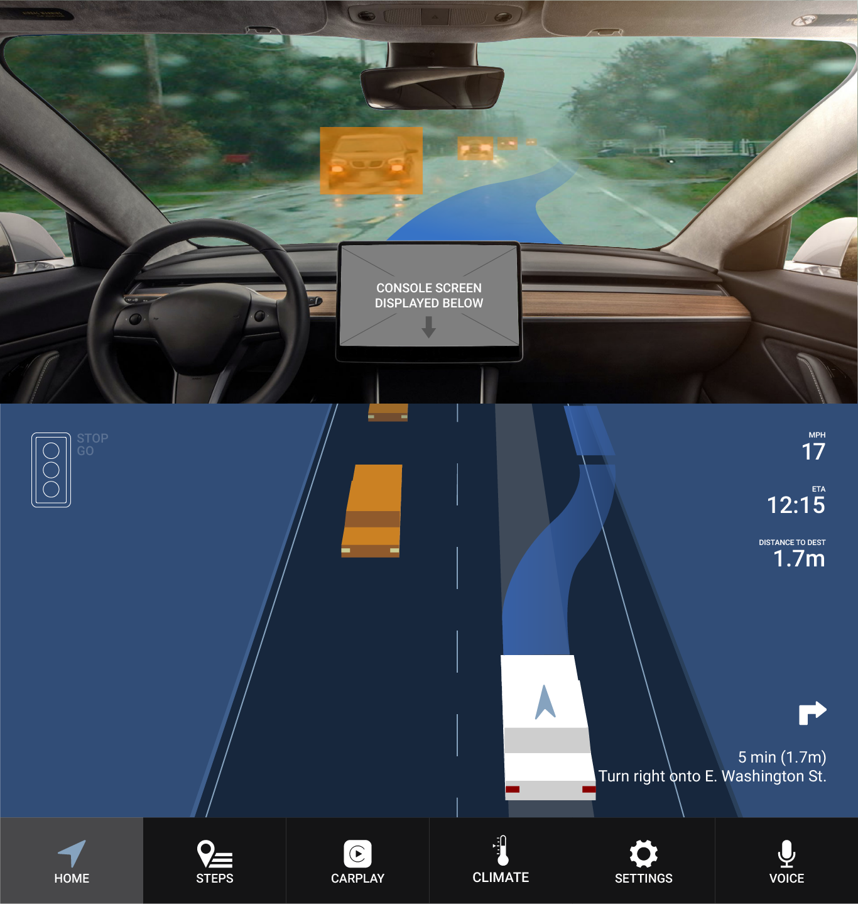

AutoMate: Autonomous Vehicle Interface

Project Type: Interaction Design
Date: September 2017 - December 2017
Role: Interaction Designer
Work Setting: Team of 5
Summary
Following the structure of the CHI Design Competition 2018, our team set out to develop a product concept to engage a community that is hesitant to adopt new technologies, even when they pose as safer alternatives to the way things currently are. With this in mind, we developed, through the stages of UX research, sketching, wireframing, and prototyping, an interface for the interior of an autonomous vehicle. The mindset that we decided to take with this project was that were were building for technology that is “10 years down the road.” This was a project for the School of Information Course, SI 482 Interaction Design Studio.
Problem Definition
When thinking about the reasons behind why people are apprehensive in adopting technologies like autonomous cars, everything seemed to boil down to one core issue: trust. This was the problem we were trying to solve. How to build trust between humans and intelligent machines. Being that our specific design involved self-driving cars, we narrowed our primary trust issue to revolve around two main ideas:
1) The passenger does not know what the car sees and why it is making the decisions it is making 2) People are often more inclined to trust other people in potentially dangerous situations, like driving.
Sketching Solutions
To start ideating solutions, each member of our group sketched about 50 solutions, feasible or not. By the end of the process, we had about 250 sketches of solutions that we could go through to start deciding on ideas that we would explore further.

Competitive Analysis
After choosing a solution - an augmented reality interface paired with a console display - that we wanted to proceed with, we started researching existing solutions that would act as competitors to our solution.
Direct competitors included systems like Mercedes-Benz’s AV tech and Tesla’s Autopilot as well as other auto manufacturers’ technologies. Indirect competitors included systems such as Domino’s Autonomous Pizza Delivery cars and Starship Technologies autonomous delivery robots. Our primary use for these indirect competitors was too see how autonomous vehicles and robots interacted with pedestrians and the surrounding environment.
Personas
Our team created personas based off of a few primary user groups that we would be targeting with our product. The three user groups we identified were:
1) People over the age of 60 that are hesitant to adopt new technologies 2) People under the age of 60 that are accepting of new technologies 3) Drivers under the age of 25 that want freedom to to drive and be adventurous
The final persona that we created was an anti-persona of a pedestrian outside of the car.
The example below shows the persona that I created; a secondary persona of a mother looking to buy a car for her teen driver.
Scenarios
Based on the personas we created, we developed four scenarios in which each persona would interact with the autonomous vehicle and our interface.
One one the scenarios was as follows:
Matt, Marybeth’s 16 year old son, just received his driver’s license. Marybeth has been tasked with purchasing a car for her son.
After work on Tuesday, while Matt is at football practice, Marybeth runs over to a few car dealerships. After looking at a few cars and a few brands, she is asked by a salesperson if she would like to look at a self driving car with a new interface that is supposed to help riders trust the car. Out of curiosity, Marybeth accepts and asks to go for a test ride.
In the car, Marybeth sees a windshield display both showing the route that the car is taking and highlighting some obstacles around the car. She looks to the left and sees that the car next to her is highlighted in red as it drives past.
A little further down the road, a voice comes from the car speakers. It is a very human like voice asking, “Hello, you must be a new rider.” Marybeth sees captioning of the voice on the windshield as well. The car then states its name and a few different facts about the system. It ends with “Would you like to listen to music?” Marybeth, with a confused expression, looks at the salesperson in the backseat, then replies softly saying, “No, I’d be more comfortable if you just focus on the road.” The car replies, “No problem, I’ll keep you updated on what what I see.”
Marybeth is a bit shocked that the car listens to her comment and replies like a human. She says, “Oh, thank you.” The car replies, “You’re welcome, just let me know if you want to listen to the radio or you can just use the screen to your left to control the infotainment center.”
After taking a few turns, the car starts heading back toward the car dealership. Eventually, it reaches a crosswalk. The car highlights a few pedestrians waiting to cross and comes to a stop. The pedestrians look a bit confused as there is no driver in the driver’s seat, but they cross the street anyway. After they cross, the car continues to drive toward the car dealership. Marybeth smiles, as she has gotten a bit more comfortable with the system.
The car dealership is in sight now, but Marybeth has her mind elsewhere. She sees a cyclist approaching on the side of the road. He is looking across the street as though he wants to cross. He makes his move. Startled, Marybeth exclaims, “Oh, watch out for the biker!” She looks away. The car replies, “Don’t worry, I see them.” Marybeth feels the car slow down as she looks back toward the windshield. She sees the cyclist, highlighted on the windshield, go by the front of the car.
The car pulls into the dealership and says, “We’ve reached our destination. Let me know if you need anything before you head out.” Marybeth replies “Actually, yeah, can you play some music.” The car responds, “Of course.” The radio fades in. Marybeth replies, “Thank you.” The car responds. “No problem.”
Storyboards
From the scenarios, we created concise storyboards to better describe the scenarios in a visual sense and summarize the scenarios down to the core essentials.
This is the storyboard for the scenario given above:

QOC and Wireframing:
To start the design decision making process, we created simple wireframes for an augmented reality windshield display as well as constructed QOC’s (Questions, Options, Criteria) to help us better understand the design decisions we how they would ultimately affect our solution.
From these QOC’s we sketched wireframes of our options to get a better idea of how these design choices would look and feel visually.

Low fidelity Prototypes
We started the prototyping phase by creating a paper prototype of our product. Since our design involved the interior of a car, we decided to represent the two main interior aspects that we would be focusing on:
1) The windshield 2) The console
High Fidelity Prototypes
After creating our paper prototype and running a few user tests on the low fidelity prototype, we proceeded into create digital prototypes in InVision taking into account the feedback we received from our paper prototype.
Version 1

Version 2
Feedback from Version 1:
  Final Digital Prototype
Feedback from version 2:
   Final Prototype
Interact with the final prototype here
Learning from Failure
Throughout this project, we did not effectively work to revise and improve our product or our methods based on the problems that we ran into along the way.
The key takeaway from this project is that failure is an opportunity for learning, but it is on you to capitalize on this opportunity. My team did not seem to capitalize on what we could learn from our failures.
After the project was over and the course was complete, I went back to this project and tried to understand what our problems were and how we could have better taken advantage of the issues we faced.
Here is what I found:
- We designed for “10 years in the future” but did not take into account how the interior of cars, especially autonomous cars, would change in those 10 years.
- We designed for the car of today, but the interior of an autonomous car is more likely to end up looking very different
- We used 2-dimensional prototypes for a 3-dimensional interface.
- I did some research and came across this article that gave some insight into designing and prototyping 3d interfaces.
- During our project, new technology for prototyping in virtual reality was being created for applications such as Proto.io. This would have allowed us to better prototype for a 3d environment by actually placing the user into a virtual vehicle.
- We jumped at the low hanging fruit for our solution. Heads up displays and console displays already exist. Our solution only solved a few more issues that did not seem to be addressed by other solutions that are already out there.
- We could have been much more creative, allowing for a project that would have taught us much more about interaction design.
To be fair, the purpose of this course was not to create a novel solution, but rather to understand the process of creating an interaction design solution.